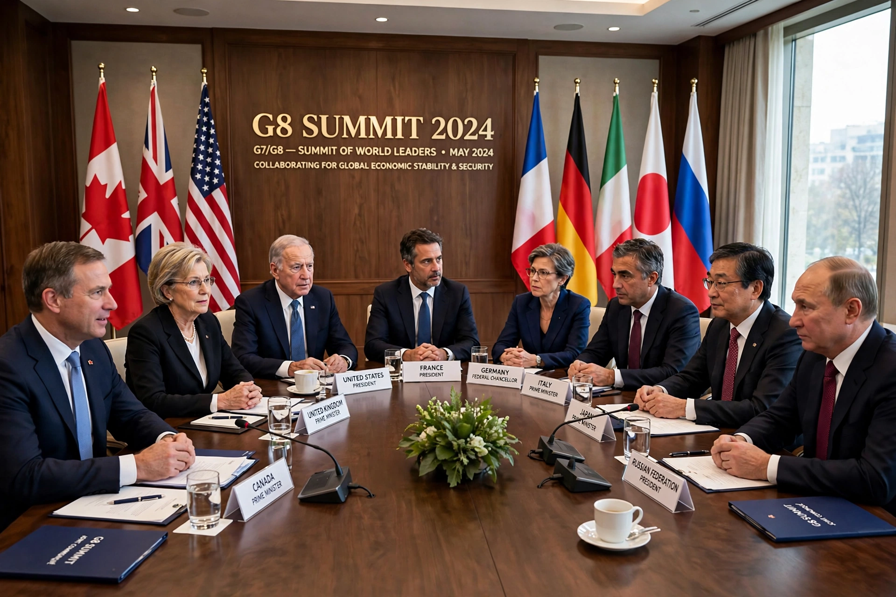

The Group of Eight (G8) was an intergovernmental political forum of the world's major industrialised democracies from 1997/98 until 2014, comprising Canada, France, Germany, Italy, Japan, Russia, the United Kingdom and the United States, with the European Union participating as a non-enumerated member. It grew out of the G6 (1975) and G7, and ceased to function as the G8 in March 2014 when the other members suspended Russia over the annexation of Crimea, reverting to the G7 format.
The forum began as the "Library Group" of finance officials and was formalised at the 1975 Rambouillet summit, where France convened the leaders of France, West Germany, Italy, Japan, the United Kingdom and the United States (the G6) in response to the 1973 oil crisis. Canada joined in 1976, creating the G7, and the European Community (later EU) began attending in 1977. Russia participated increasingly after the Cold War, joining fully as the eighth member from the 1997 Denver "Summit of the Eight" and the 1998 Birmingham summit, though finance ministers continued to meet as the G7.
The G8 had no permanent secretariat or headquarters; the presidency rotated annually among members, and the host country organised the leaders' summit and preparatory ministerial meetings (foreign, finance, environment, justice and others). "Sherpas" — personal representatives of the leaders — prepared summit communiqués. Summits became major media and protest events, most notoriously at Genoa in 2001, where a protester was killed during large anti-globalisation demonstrations, and at Gleneagles in 2005, which coincided with the Make Poverty History campaign and Live 8 concerts.
Originally focused on macroeconomic coordination (the 1978 Bonn and 1985 Plaza and 1987 Louvre agreements were G5/G7 products), the agenda broadened to trade, development, debt relief for heavily indebted poor countries, HIV/AIDS funding, climate change and security issues including terrorism and nuclear non-proliferation. During the 2008 financial crisis, crisis management largely shifted to the wider G20, whose rise reduced the G8's centrality; the Financial Stability Board was created under G20 auspices in 2009.
Following Russia's annexation of Crimea in March 2014, the other seven members suspended Russia's participation, cancelled the planned Sochi summit and met in Brussels as the G7. The G7 format has continued since; proposals to readmit Russia or expand the group have repeatedly been debated but not adopted. Russia formally withdrew from the parliamentary assembly framework and indicated in 2017 that it would not seek to return.
See also: G7, G20, Financial Stability Board, 2008 financial crisis.